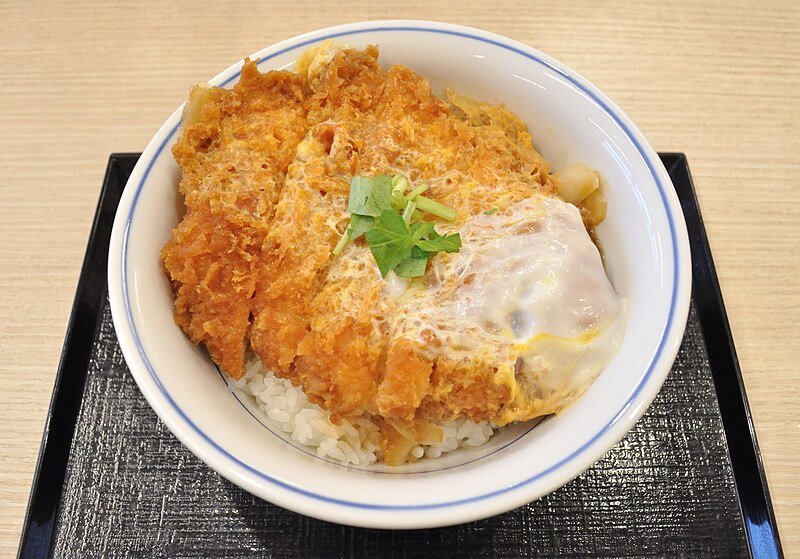

Katsudon

The food of all people
Katsudon is a Japanese rice bowl featuring fried pork
It is widely popular in Japan and is considered a kind of fast food
Here are the lists of ingredients:
- Eggs
- Onionr
- Soy Sauce
- All-purpose-flour
- sliced onion
- Pork chop
Here are the steps for fried chicken recipe
- Make Tonkatsu
- Cook onion in savory broth till tender
- Place Tonkatsu on top to let it absorb the flavors of the broth.
- Add the beaten egg mixture and cook till just set.
- Serve over steamed rice and enjoy!